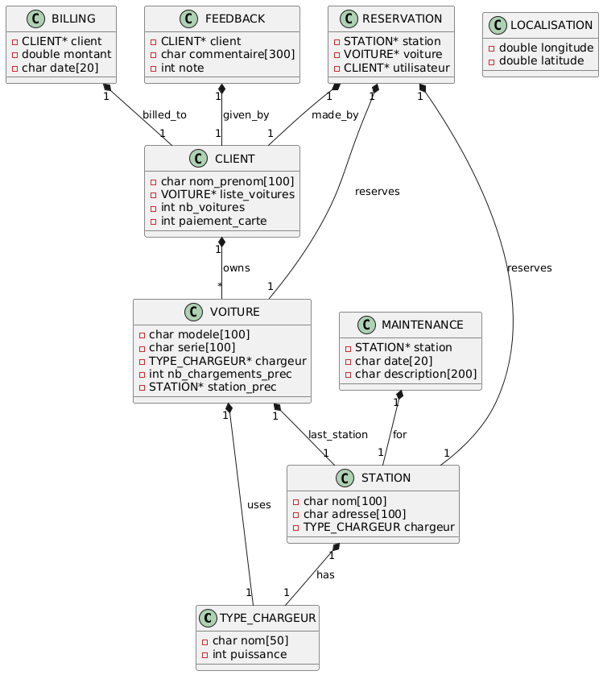

Documentation du Système de Gestion de Recharge de Voitures Électriques
groupe : grp A
numero de binome : 10
Réalise par :
- Hkimi Mohamed Amin
- Makrem
- Zied
1. Introduction
Ce document présente le système de gestion de recharge de voitures électriques, décrivant les structures de données et les méthodes utilisées pour faciliter la recherche, la réservation et le paiement pour les utilisateurs.
2. Structures de Données
Structure type_de_chargeur
struct type_de_chargeur {
char nom[50]; // Par exemple : "Type 2", "CHAdeMO", "CCS"
int puissance; // Puissance en kW
};
typedef struct type_de_chargeur TYPE_CHARGEUR;
Cette structure représente un type de chargeur pour les voitures électriques. Elle inclut le nom du chargeur et sa puissance en sortie.
Structure station
struct station {
char nom[100]; // Nom de la station
char adresse[100]; // Adresse de la station
TYPE_CHARGEUR chargeur; // Le type de chargeur disponible à la station
};
typedef struct station STATION;
Cette structure représente une station de recharge, incluant son nom, son adresse et le type de chargeur qu'elle propose.
Structure voiture
struct voiture {
char modele[100]; // Modèle de la voiture
char serie[100]; // Série ou version de la voiture
TYPE_CHARGEUR* chargeur; // Type de chargeur de la voiture
int nb_chargements_prec; // Nombre de chargements précédents
STATION* station_prec; // Station de recharge précédente
};
typedef struct voiture VOITURE;
Cette structure représente une voiture électrique, incluant son modèle, sa série, le type de chargeur qu'elle utilise, le nombre de chargements précédents et la station de recharge précédente.
Structure client
struct client {
char nom_prenom[100]; // Nom et prénom du client
VOITURE* liste_voitures; // Liste de voitures appartenant au client
int nb_voitures; // Nombre de voitures
int paiement_carte; // 1 pour carte enregistrée, 0 sinon
};
typedef struct client CLIENT;
Cette structure représente un client, incluant son nom, une liste de ses voitures, le nombre de voitures et un indicateur de paiement par carte.
Structure localisation
struct localisation {
double longitude;
double latitude;
};
typedef struct localisation LOCALISATION;
Cette structure représente une localisation géographique avec des coordonnées de longitude et latitude.
Structure reservation
struct reservation {
STATION* station; // Station réservée
VOITURE* voiture; // Voiture réservée
CLIENT* utilisateur; // Utilisateur qui fait la réservation
};
typedef struct reservation RESERVATION;
Cette structure représente une réservation, incluant la station de recharge, la voiture et l'utilisateur.
Structures Indépendantes
struct maintenance {
STATION* station; // Station concernée
char date[20]; // Date de la maintenance (format: JJ/MM/AAAA)
char description[200]; // Description des travaux effectués
};
typedef struct maintenance MAINTENANCE;
struct billing {
CLIENT* client; // Client concerné
double montant; // Montant facturé
char date_facture[20]; // Date de la facture (format: JJ/MM/AAAA)
};
typedef struct billing BILLING;
struct feedback {
CLIENT* client; // Client qui donne le feedback
char commentaire[500]; // Commentaire ou retour d'expérience
int note; // Note sur 5
};
typedef struct feedback FEEDBACK;
Ces structures représentent des entités indépendantes telles que les enregistrements de maintenance, les informations de facturation et les retours des clients, sans relation directe avec les structures principales.
3. Fonctions
Fonctions de Recherche
void rechercher_station_par_nom(const char* nom);
void rechercher_voiture_par_modele(const char* modele);
void rechercher_client_par_nom(const char* nom_prenom);
Ces fonctions permettent de rechercher des stations, des voitures et des clients par leur nom ou modèle respectif.
Fonctions de Gestion des Réservations et Paiements
void reserver_station(RESERVATION* reservation);
void effectuer_paiement(CLIENT* client, double montant);
void annuler_reservation(RESERVATION* reservation);
STATION* obtenir_station_meilleur_feedback(FEEDBACK feedbacks[], int nb_feedbacks, STATION stations[], int nb_stations);
void afficher_stations_proches(LOCALISATION localisation_client, STATION stations[], int nb_stations);
Ces fonctions permettent de réserver une station, effectuer un paiement et annuler une réservation. afficher les stations la plus proche d'une localisation , afficher la station avec le meilleure feedback
Fonction d'Affichage du Menu
void afficher_menu() {
printf("\n---- Menu de l'Application ----\n");
printf("1. Rechercher une station\n");
printf("2. Réserver une station\n");
printf("3. Effectuer un paiement\n");
printf("0. Quitter\n");
}
Cette fonction affiche le menu principal de l'application avec les options disponibles.
4. Fonction Principale
int main() {
int choix;
do {
afficher_menu();
printf("Entrez votre choix : ");
scanf("%d", &choix);
switch (choix) {
case 1:
printf("Recherche de station\n");
// Appeler la fonction de recherche de station ici
break;
case 2:
printf("Réservation\n");
// Appeler la fonction de réservation ici
break;
case 3:
printf("Paiement\n");
// Appeler la fonction de paiement ici
break;
case 0:
printf("Quitter l'application.\n");
break;
default:
printf("Choix non valide, veuillez réessayer.\n");
}
} while (choix != 0);
return 0;
}
La fonction principale exécute le programme, affiche le menu et traite les choix de l'utilisateur.
5. Diagramme de Classe
Le diagramme de classe suivant représente les principales entités de notre système de gestion de recharge de voitures électriques.
